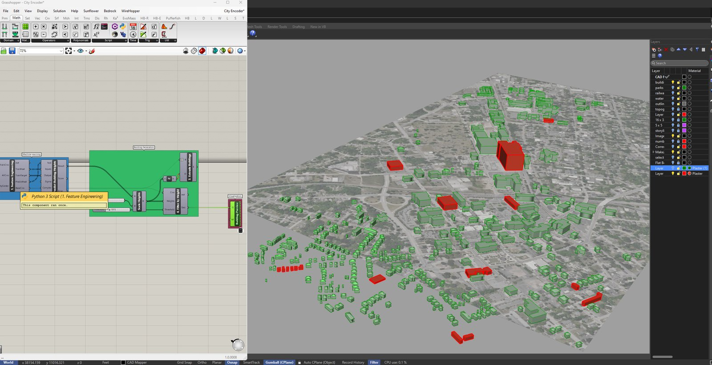
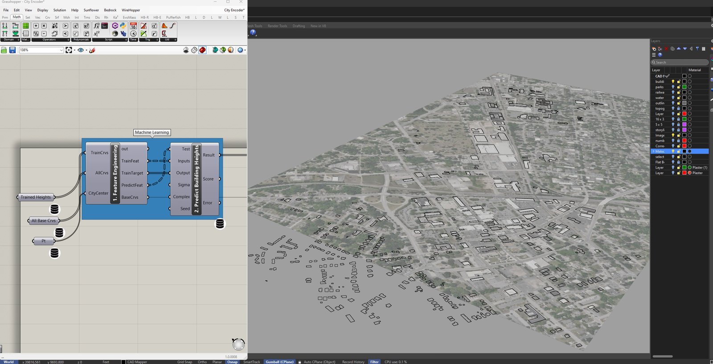
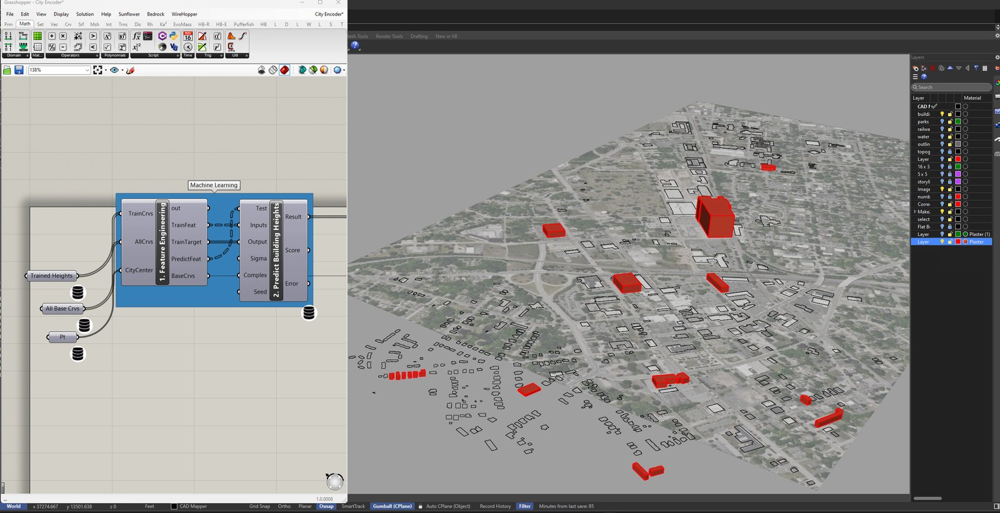
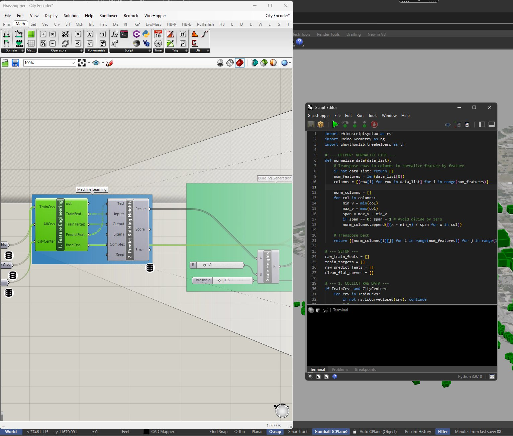
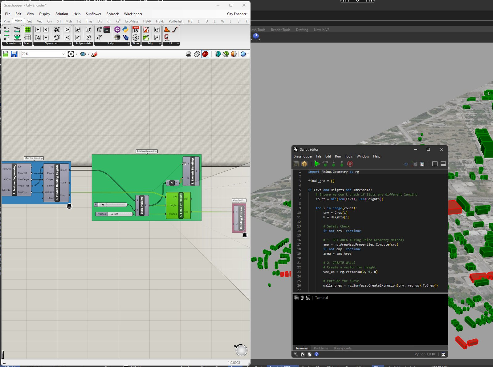

Modeling a whole city—or any large set of parcels—when you don't know each building's height is normally a slog: you'd measure or guess thousands of them. City Encoder skips that. Measure a handful of real heights, and let machine learning infer the rest.
You assign actual heights to a small sample of parcels, then the tool derives a feature for every parcel—footprint area, the area-to-height ratio, distance to the city center—and trains a LunchBox ML model on the known ones. It predicts a height for each remaining parcel and extrudes the entire city in seconds. Custom GhPython handles the feature engineering and massing; LunchBox ML does the regression. The same approach works anywhere you have a few real numbers and want a fast, reasonable estimate for the rest of a list.

The result: an entire district massed in one pass. The few parcels with measured heights are red; everything green was predicted by the model—a rough but plausible city in seconds rather than days.

The input: thousands of parcel footprints pulled in over an aerial, with no height information attached—a flat city waiting to be massed.

A small, varied sample of parcels (red) is given its real measured heights. That handful of ground-truth values is all the model gets to learn from.

Custom GhPython assembles a feature table for every parcel and feeds the known samples into a LunchBox ML regression component, which learns how those features map to height.

The Python that does the work: per-parcel features computed and filtered, then predicted heights driving the extrusions that begin to populate the model.
The definition starts from a set of parcel footprints—here a whole city district over an aerial—none of which carry a height. You pick a small, varied sample and give those their real measured heights; that becomes the training set.
For every parcel, custom GhPython derives features that tend to correlate with height: footprint area, the area-to-height ratio observed in the samples, and proximity to the city center, among others. Those features and the known heights go into a LunchBox ML regression component, which learns the relationship and predicts a height for each remaining parcel.
The predictions drive a single extrusion pass that masses the whole city—samples in red, predictions in green. Because the logic is simply “a few knowns, estimate the rest,” the same setup transfers to any dataset where you can measure a little and need to approximate a lot.